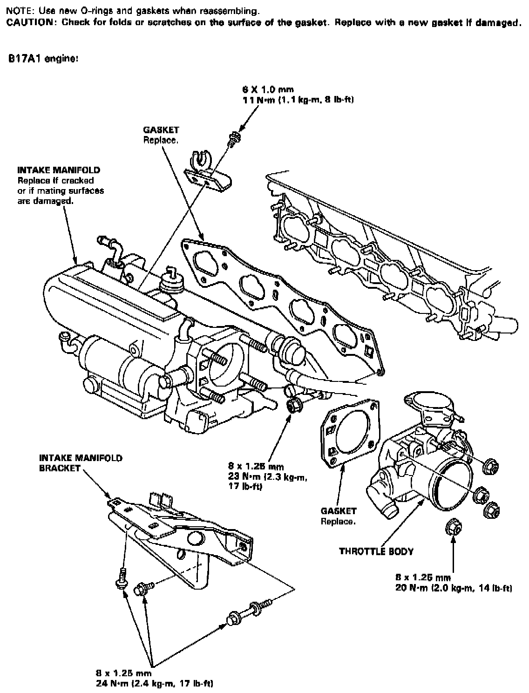
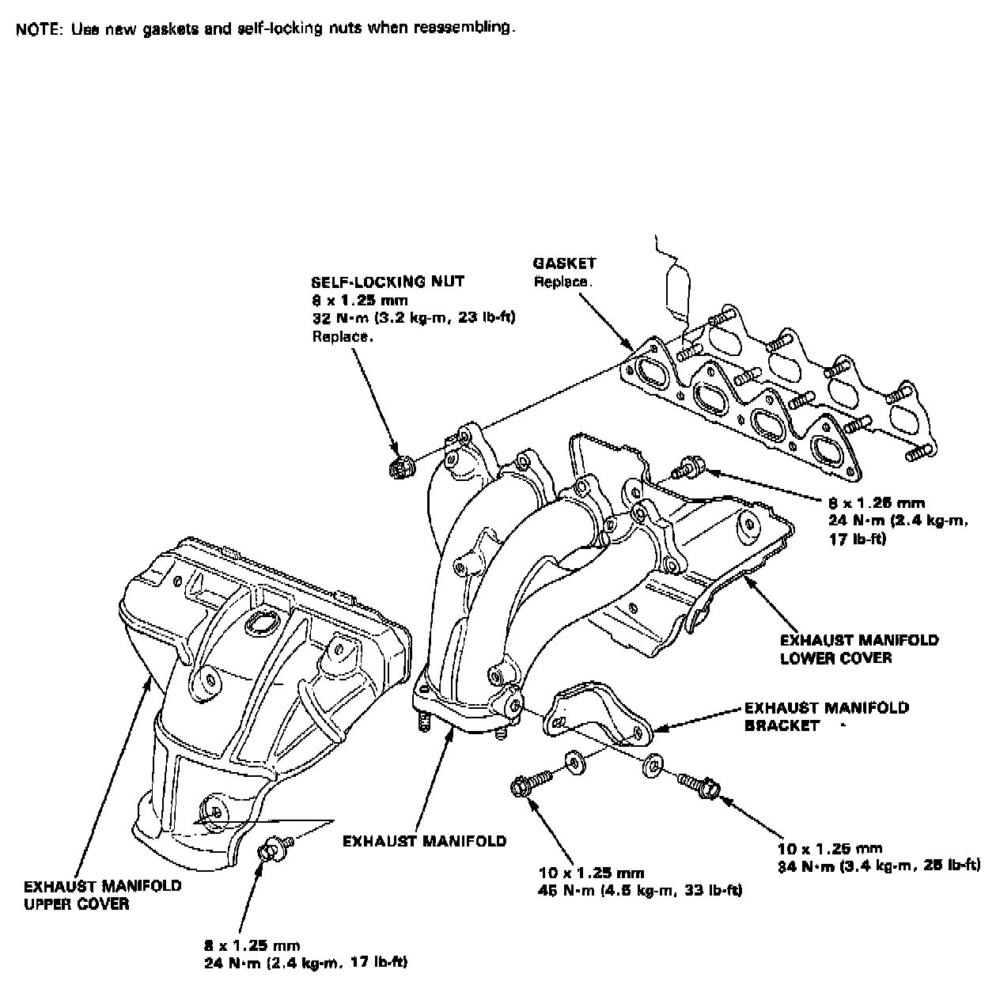
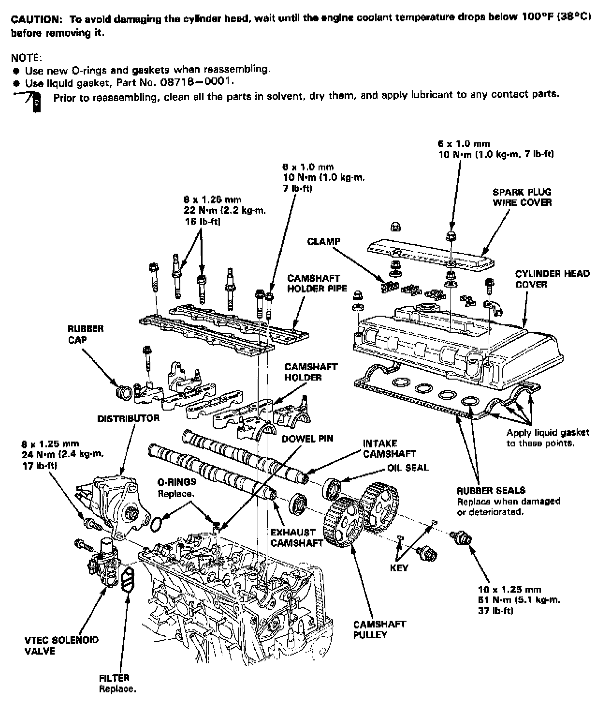
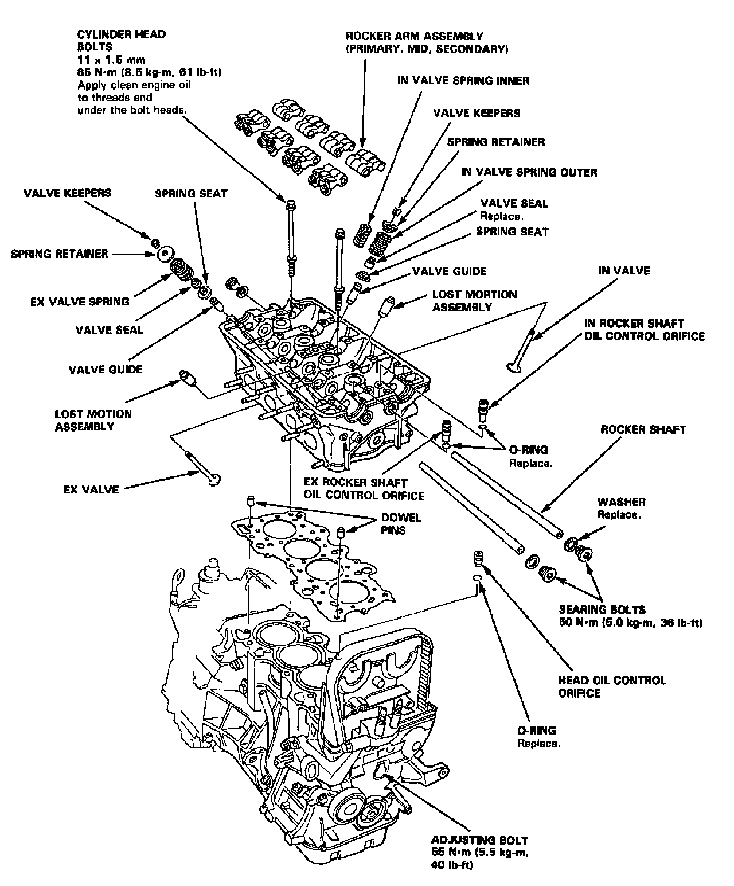
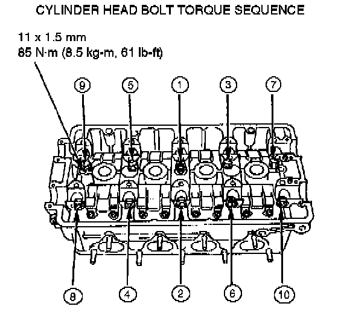

System Specifications
Intake:

Exhaust Manifold:

Upper Engine:


Cylinder Head Bolt Torque Sequence:

Tighten head bolts, in sequence, in two steps:
1st step: Tighten to 30 N.m (3.0 kg-m, 22 lb.ft)
2nd step: Tighten to 85 N.m (8.5 kg-m, 61 lb.ft)